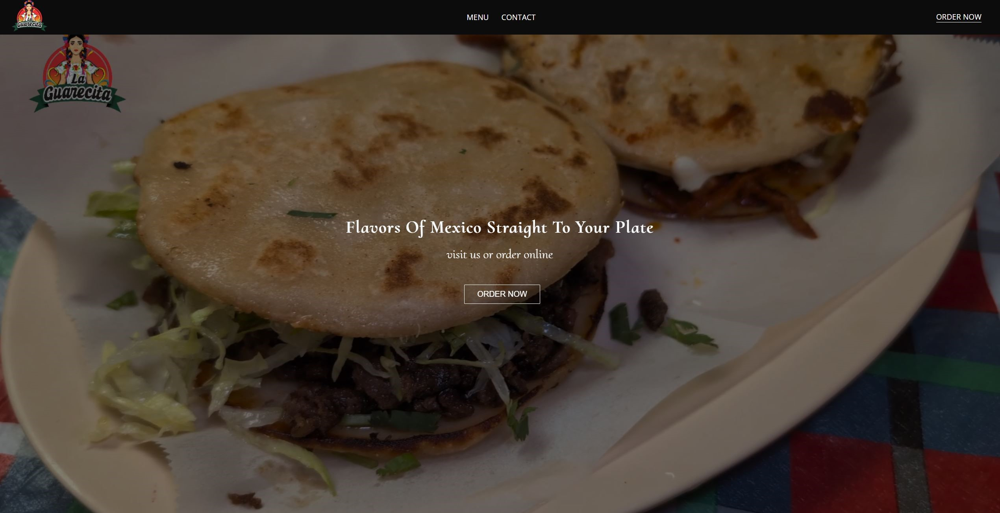

Restaurant Web Portal
Created a dynamic restaurant website using JavaScript to showcase general information,
with responsive design and styling implemented through CSS for an intuitive user experience.
The website was deployed using Microsoft Azure to ensure secure and scalable hosting.

Software Engineering Internship

Collaborated on migrating financial legacy integrations from on-premises to AWS,
leveraging AWS Lambda functions to automate and process 100+ transactions for
Microsoft Dynamics AX, improving reliability and performance.
Analyzed and debugged C# code to develop automation tests in Visual Studio and
implemented high-availability AWS integrations in .NET Core, ensuring transaction
archiving and enhanced system reliability.
Data Cleanup & Exploratory Analysis

Conducted data cleaning and exploratory analysis on a layoff dataset using MySQL Workbench,
uncovering key trends and insights.
Music Recommendation System
Developed a music recommendation system that generates personalized suggestions based on an
artist or Spotify playlist. Integrated Spotify’s API and Kaggle datasets to enhance accuracy,
and used Python and Pandas to preprocess and analyze 50,000+ songs. Implemented a dynamic,
locally hosted web interface using Flask and HTML for user interaction.
Tech Finder (Webscraper)
Developed a Python program during the GPU shortage to streamline the search for gaming GPUs
by extracting prices and store links from multiple retailers in a single query.
Utilized Beautiful Soup for web scraping, Selenium for handling dynamic content,
and Pandas for data processing, exporting results to a CSV file for easy analysis.
Text Based Adventure Game
Collaborated in a team to develop a text-based adventure game using Java,
featuring a modular design with multiple classes for character functionality.
Designed an interactive user interface with Java Swing to enhance user experience and
gameplay accessibility.
Collaborated in a team of four to develop a platform-style video game using Unity
and C#. Designed the main menu and cut scenes using Unity Store assets,
implemented audio features, and ensured smooth functionality and a polished user experience.